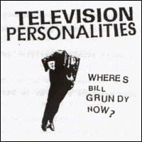
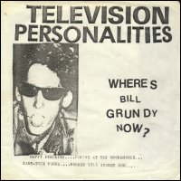
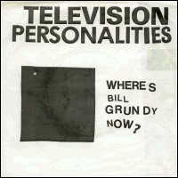
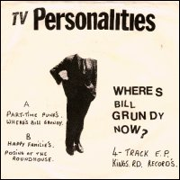
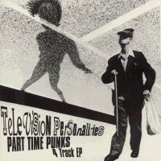

Television Personalities |
    1978 - King's Road - LYN 6976/7 - 7" Songs: Part-Time Punks Where's Bill Grundy Now? Happy Families Posing At The Roundhouse
Note: There are four sleeves: [1st issue] features
a picture of a dressed up man with his head missing on the front and details
of the records' making (cost, pressing plant, cover printer, etc) on the
back. [2nd issue] features a picture of a punk with sunglasses on the front
and a letter from Sounds on the back. [3rd issue] features a black square
on the front and a Beatles picture on the back. [4th issue] front cover similar
as the 1st issue. On the back there are pictures of Ringo Starr reading a
mag and George Harrison playing guitar and various press
cuttings. |
1979 - Rough Trade - RT033 - 7" Songs: Part-Time Punks Where's Bill Grundy Now? Happy Families Posing At The Roundhouse
We are: N. Parsons (Guitar/Bass, B. Vocals) & R. Harty (Drums, L.
Vocals)
Note: Same cover as 4th original
issue. |
 1992 - Overground - OVER25 - 7" Songs: Part-Time Punks Where's Bill Grundy Now? Happy Families Posing At The Roundhouse
Note: Re-titled "Part Time Punks" |